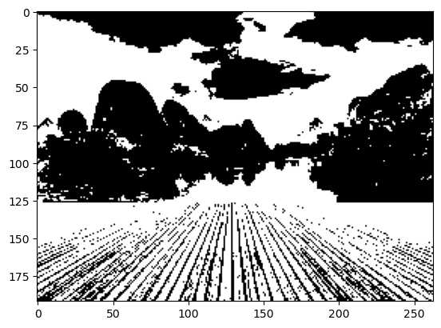
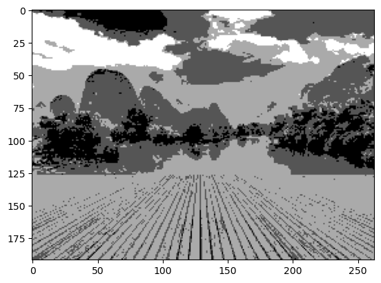
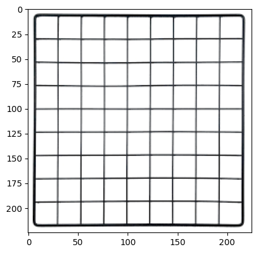
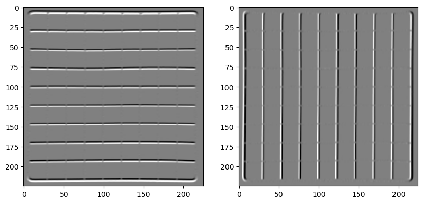
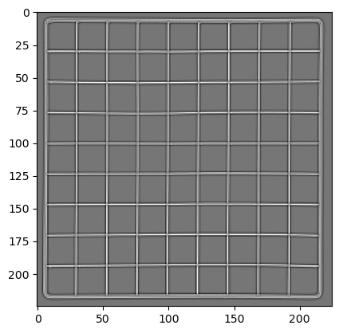
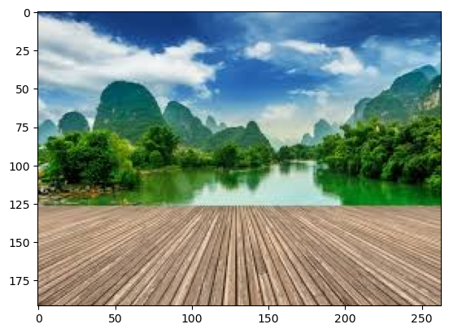
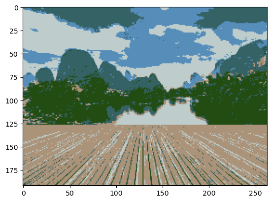

# Import packages
from skimage.color import rgb2gray
import numpy as np
import cv2
import matplotlib.pyplot as plt
%matplotlib inline
from scipy import ndimageFrom https://www.analyticsvidhya.com/blog/2019/04/introduction-image-segmentation-techniques-python/?utm_source=blog&utm_medium=computer-vision-implementing-mask-r-cnn-image-segmentation#2
Threshold Segmentation
Most basic form of segmentation: threshold segmentation
If we have two classes, we define a single global threshold. If we have multiple classes, we define several local thresholds.
# Read and display image
image = plt.imread('1.jpeg')
plt.imshow(image);
print(image.shape)(192, 263, 3)# Convert to grayscale to illustrate thresholding
gray = rgb2gray(image)
# cv2.imshow('img',gray)
# cv2.waitKey(0)
# cv2.destroyAllWindows()
plt.imshow(gray, cmap = "gray");
# Show shape
gray.shape(192, 263)# Threshold using mean value
# no need for a loop...
gray_r = gray.reshape(gray.shape[0]*gray.shape[1])
for i in range(gray_r.shape[0]):
if gray_r[i] > gray_r.mean():
gray_r[i] = 1
else:
gray_r[i] = 0
gray = gray_r.reshape(gray.shape[0],gray.shape[1])
plt.imshow(gray, cmap='gray')
# Threshold with several values
# no need for a loop...
gray = rgb2gray(image)
gray_r = gray.reshape(gray.shape[0]*gray.shape[1])
for i in range(gray_r.shape[0]):
if gray_r[i] > gray_r.mean():
gray_r[i] = 3
elif gray_r[i] > 0.5:
gray_r[i] = 2
elif gray_r[i] > 0.25:
gray_r[i] = 1
else:
gray_r[i] = 0
gray = gray_r.reshape(gray.shape[0],gray.shape[1])
plt.imshow(gray, cmap='gray')
Advantages: - Easy to implement - Runs fast - Works well if contrast is high
Limitations: - Only uses grayscale - Performs bad if low grayscale contrast or grayscale value overlap
Edge detection segmentation
First convolve the image with a kernel that detects edges. Then threshold (presumably).
# Read and display image
image = plt.imread('index.png')
plt.imshow(image);
# Convert to grayscale
gray = rgb2gray(image[:,:,:3])
# Defining the sobel filters (specific kernels for extracting edges)
sobel_horizontal = np.array([[1, 2, 1],[0, 0, 0],[-1, -2, -1]])
print(sobel_horizontal, 'is a kernel for detecting horizontal edges')
sobel_vertical = np.array([[-1, 0, 1],[-2, 0, 2],[-1, 0, 1]])
print(sobel_vertical, 'is a kernel for detecting vertical edges')[[ 1 2 1]
[ 0 0 0]
[-1 -2 -1]] is a kernel for detecting horizontal edges
[[-1 0 1]
[-2 0 2]
[-1 0 1]] is a kernel for detecting vertical edges# Convolve
out_h = ndimage.convolve(gray, sobel_horizontal, mode='reflect')
out_v = ndimage.convolve(gray, sobel_vertical, mode='reflect')
# here mode determines how the input array is extended when the filter overlaps a border.
# Show results
fig, ax = plt.subplots(1, 2, figsize = (10, 5))
ax[0].imshow(out_h, cmap='gray')
ax[1].imshow(out_v, cmap='gray');
# The laplacer operator/kernel can detect both horizontal and vertical edges
kernel_laplace = np.array([np.array([1, 1, 1]), np.array([1, -8, 1]), np.array([1, 1, 1])])
print(kernel_laplace, 'is a laplacian kernel')[[ 1 1 1]
[ 1 -8 1]
[ 1 1 1]] is a laplacian kernel# Convolve, show results
out_l = ndimage.convolve(gray, kernel_laplace, mode='reflect')
plt.imshow(out_l, cmap='gray');
Clustering segmentation
Let’s try segmentation with k-means clustering
# Read and display
pic = plt.imread('1.jpeg')/255 # dividing by 255 to bring the pixel values between 0 and 1
print(pic.shape)
plt.imshow(pic);(192, 263, 3)
# Reshape to have row for each pixel, column for each channel (we will not be doing anything spatial)
pic_n = pic.reshape(pic.shape[0]*pic.shape[1], pic.shape[2])
pic_n.shape(50496, 3)# Apply k-means clustering
from sklearn.cluster import KMeans
kmeans = KMeans(n_clusters=5, random_state=0).fit(pic_n)
pic2show = kmeans.cluster_centers_[kmeans.labels_] # returns clusters centers# Display results
cluster_pic = pic2show.reshape(pic.shape[0], pic.shape[1], pic.shape[2])
plt.imshow(cluster_pic);
K-means often performs well on small datasets!
But not very well on large numbers of images.
Mask R-CNN segmentation
This is an extension of the Faster R-CNN method, which identifies the class and a bounding box for each object. The benefit of Mask R-CNN is that it adds a pixel-wise mask as well.
The first tutorial briefly discusses how this works, but does not include Python code for doing it ourselves.
I think the implementation is included in the next tutorial! https://www.analyticsvidhya.com/blog/2019/07/computer-vision-implementing-mask-r-cnn-image-segmentation/
Let’s work through the second tutorial now.
Includes a helpful graphic for distinguishing between Faster R-CNN and Mask R-CNN.
Briefly explains how Faster R-CNN works (I didn’t understand this).
Explains more in-depth how Mask R-CNN works (I also didn’t understand this).
Training time for CNNs is quite high. It took the author of the tutorial 1-2 days to train their model. Hence we use a pre-trained model below.
# Clone repository with the architecture for RCNN
!git clone https://github.com/matterport/Mask_RCNN.gitCloning into 'Mask_RCNN'...
remote: Enumerating objects: 956, done.
remote: Total 956 (delta 0), reused 0 (delta 0), pack-reused 956
Receiving objects: 100% (956/956), 137.67 MiB | 16.08 MiB/s, done.
Resolving deltas: 100% (558/558), done.# Install required packages
!pip install cython tensorflow keras opencv-python h5py imgaugCollecting cython
Downloading Cython-3.0.10-cp312-cp312-macosx_10_9_x86_64.whl.metadata (3.2 kB)
Downloading Cython-3.0.10-cp312-cp312-macosx_10_9_x86_64.whl (3.1 MB)
━━━━━━━━━━━━━━━━━━━━━━━━━━━━━━━━━━━━━━━━ 3.1/3.1 MB 12.9 MB/s eta 0:00:0000:0100:01
Installing collected packages: cython
Successfully installed cython-3.0.10Download pre-trained weights: https://github.com/matterport/Mask_RCNN/releases
I went with the 2.0 version, downloading just mask_rcnn_coco.h5.
Then place the download in the samples folder of the cloned GitHub repo.
Now look in the samples folder for part 2.
Look at level sets and active contours?